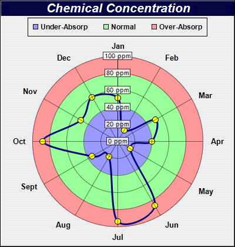

This example demonstrates adding circular zones to a polar chart.
In ChartDirector, a zone defined on the radial axis will mark a radius range, and so will appear as ring on a polar chart.
This example contains three circular zones in the plot area background, colored as red, green and blue. The blue region is the original background of the plot area, while the red and green regions are added using
Axis.addZone of the radial axis object.
The following is the command line version of the code in "cppdemo/polarzones". The MFC version of the code is in "mfcdemo/mfcdemo". The Qt Widgets version of the code is in "qtdemo/qtdemo". The QML/Qt Quick version of the code is in "qmldemo/qmldemo".
#include "chartdir.h"
int main(int argc, char *argv[])
{
// The data for the chart
double data[] = {51, 15, 51, 40, 17, 87, 94, 21, 35, 88, 50, 60};
const int data_size = (int)(sizeof(data)/sizeof(*data));
// The labels for the chart
const char* labels[] = {"Jan", "Feb", "Mar", "Apr", "May", "Jun", "Jul", "Aug", "Sept", "Oct",
"Nov", "Dec"};
const int labels_size = (int)(sizeof(labels)/sizeof(*labels));
// Create a PolarChart object of size 400 x 420 pixels
PolarChart* c = new PolarChart(400, 420);
// Set background color to a pale grey f0f0f0, with a black border and 1 pixel 3D border effect
c->setBackground(0xf0f0f0, 0x000000, 1);
// Add a title to the chart using 16pt Arial Bold Italic font. The title text is white
// (0xffffff) on a dark blue (000040) background
c->addTitle("Chemical Concentration", "Arial Bold Italic", 16, 0xffffff)->setBackground(0x000040
);
// Set center of plot area at (200, 240) with radius 145 pixels. Set background color to blue
// (9999ff)
c->setPlotArea(200, 240, 145, 0x9999ff);
// Color the region between radius = 40 to 80 as green (99ff99)
c->radialAxis()->addZone(40, 80, 0x99ff99);
// Color the region with radius > 80 as red (ff9999)
c->radialAxis()->addZone(80, 999, 0xff9999);
// Set the grid style to circular grid
c->setGridStyle(false);
// Set the radial axis label format
c->radialAxis()->setLabelFormat("{value} ppm");
// Use semi-transparent (40ffffff) label background so as not to block the data
c->radialAxis()->setLabelStyle()->setBackground(0x40ffffff, 0x40000000);
// Add a legend box at (200, 30) top center aligned, using 9pt Arial Bold font. with a black
// border.
LegendBox* legendBox = c->addLegend(200, 30, false, "Arial Bold", 9);
legendBox->setAlignment(Chart::TopCenter);
// Add legend keys to represent the red/green/blue zones
legendBox->addKey("Under-Absorp", 0x9999ff);
legendBox->addKey("Normal", 0x99ff99);
legendBox->addKey("Over-Absorp", 0xff9999);
// Add a blue (000080) spline line layer with line width set to 3 pixels and using yellow
// (ffff00) circles to represent the data points
PolarSplineLineLayer* layer = c->addSplineLineLayer(DoubleArray(data, data_size), 0x000080);
layer->setLineWidth(3);
layer->setDataSymbol(Chart::CircleShape, 11, 0xffff00);
// Set the labels to the angular axis as spokes.
c->angularAxis()->setLabels(StringArray(labels, labels_size));
// Output the chart
c->makeChart("polarzones.png");
//free up resources
delete c;
return 0;
}
© 2023 Advanced Software Engineering Limited. All rights reserved.